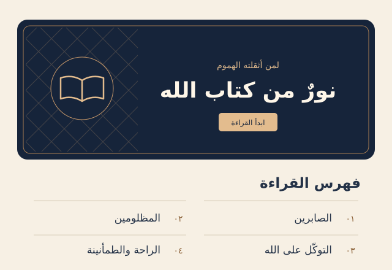

05 / Arabic reading website
Light from the Book of God
An Arabic reading experience organized around themes from the Quran.
An Arabic reading website that organizes Quranic verses and explanations by theme.
Open the website
The design challenge
Readers need a clear way to find a topic and continue reading across related pages. The design also needs to distinguish each verse, its reference, and its explanation.
The design decision
The homepage uses an ink-blue cover and a numbered index. Reading pages use a warm paper background, larger Arabic type for verses, and links to the previous and next pages.